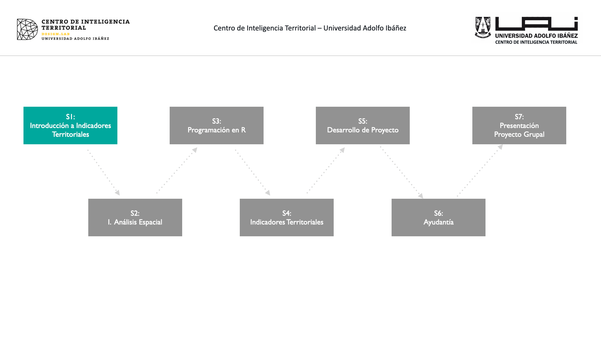

1 Introducción a Indicadores Territoriales
Conceptos fundamentales

1.1 Introducción
Los indicadores territoriales son herramientas esenciales en el análisis espacial y la planificación territorial, proporcionando una representación cuantitativa de diversas dimensiones del desarrollo en un área geográfica específica. Estos indicadores son fundamentales para entender y evaluar el estado actual y las tendencias de los territorios en aspectos económicos, sociales, ambientales y de bienestar. Al ofrecer una visión integral y detallada del territorio, los indicadores territoriales permiten a los tomadores de decisiones, planificadores urbanos y académicos identificar fortalezas, debilidades, oportunidades y amenazas en sus respectivas áreas de interés.
En esta primera sesión del curso, exploraremos los conceptos básicos y la importancia de los indicadores territoriales, así como introduciremos algunas de las principales herramientas y recursos disponibles para el análisis de estos indicadores. La sesión también incluirá una revisión de aplicaciones prácticas de indicadores territoriales a través de estudios de caso, destacando cómo se han utilizado en proyectos reales para evaluar políticas públicas y proyectos de desarrollo.
1.2 Definición y Conceptos Básicos
1.2.1 Indicadores
Un indicador es un instrumento que proporciona información sobre una condición, situación, actividad o resultado específico. Este instrumento permite definir un punto de comparación para establecer diferencias entre individuos o respecto a sí mismo en diferentes momentos en el tiempo. Los indicadores se construyen mediante análisis y operaciones técnicas que entregan una medida cuantitativa (valor) o una descripción cualitativa (caracterización) de la magnitud o criterio que se pretende medir u observar.
1.2.2 Indicadores territoriales.
Un indicador territorial es un instrumento que proporciona información específica sobre una condición, situación, actividad o resultado en un área geográfica delimitada. A diferencia de un indicador general, un indicador territorial integra la dimensión espacial en su análisis, permitiendo evaluar y comparar aspectos económicos, sociales, ambientales y de bienestar dentro de un territorio particular.
1.3 Tipos de Indicadores Territoriales
- Indicadores Accesibilidad
- Indicadores sociodemográficos
- Indicadores seguridad
- Indicadores ambientales
1.4 Pasos para la Construcción de Indicadores T.

- Presentación del Problema: Introducción al contexto y naturaleza del problema que se desea abordar con los indicadores territoriales.
- Definir un Marco Teórico o de Referencia: Establecer las teorías, conceptos y estudios previos que guiarán el análisis y la construcción de indicadores.
- Definición de Objetivos: Clarificación de lo que se espera lograr con el estudio y la construcción de indicadores territoriales.
- Recolección de datos: Identificación y recopilación de los datos necesarios para calcular los indicadores territoriales.
- Cálculo de Indicador Territorial: Proceso de cálculo del indicador territorial a partir de los datos recolectados.
- Representación Espacial: Visualización de los indicadores territoriales mediante cartografía.
- Análisis de Resultados: Interpretación y evaluación de los resultados obtenidos a partir de los indicadores territoriales.
1.5 Aplicaciones de Indicadores Territoriales
- Diagnóstico Territorial
- Evolución Territorial
- Evaluación de Escenarios
- Evaluación de Proyectos (impacto a largo plazo)
1.6 Herramientas y Recursos para el Análisis de Indicadores T.
Este conjunto de herramientas proporciona una base robusta para llevar a cabo análisis espaciales complejos, cada una con sus propias ventajas y aplicaciones específicas.
Plataformas de Análisis Espacial
QGIS
- Descripción: QGIS (Quantum GIS) es un Sistema de Información Geográfica (SIG) de código abierto que permite visualizar, editar y analizar datos espaciales. Es ampliamente utilizado por su capacidad de integrar diversos formatos de datos y su flexibilidad a través de complementos.
- Características:
- Soporte para múltiples formatos de datos vectoriales y raster.
- Amplia gama de herramientas de análisis espacial.
- Comunidad activa y numerosos complementos disponibles.
- Interfaz personalizable y amigable.
- Enlace: QGIS
ArcGIS
- Descripción: ArcGIS es una plataforma integral de SIG desarrollada por Esri. Es conocida por sus potentes herramientas de análisis, cartografía y gestión de datos espaciales, siendo una de las más utilizadas en entornos profesionales.
- Características:
- Herramientas avanzadas de análisis espacial y geoprocesamiento.
- Amplia biblioteca de datos y modelos preconfigurados.
- Soporte para aplicaciones móviles y web.
- Capacidades robustas de visualización y creación de mapas.
- Enlace: ArcGIS
Lenguajes de Programaciónm Análisis Espacial
R
- Descripción: R es un entorno y lenguaje de programación especializado en estadísticas y análisis de datos. A través de paquetes específicos, se utiliza ampliamente para análisis espacial y creación de mapas.
- Características:
- Paquetes como
sf,sp,rgdalpara análisis espacial. ggplot2para visualización de datos y mapas.rasteryterrapara manipulación de datos raster.- Integración con otros lenguajes y herramientas de análisis.
- Paquetes como
- Enlace: R
Python
- Descripción: Python es un lenguaje de programación versátil que, a través de diversas bibliotecas, se ha convertido en una herramienta poderosa para el análisis espacial y el manejo de datos geoespaciales.
- Características:
- Bibliotecas como
geopandas,shapely,fionapara manipulación de datos espaciales. matplotlibyseabornpara visualización de datos.scikit-learnytensorflowpara integración de aprendizaje automático.- Comunidad extensa y abundante documentación.
- Bibliotecas como
- Enlace: Python
1.7 Discusión
¿Existen consideraciones éticas en procesode construción de Indicadores que pudiera inducir a sesgos?